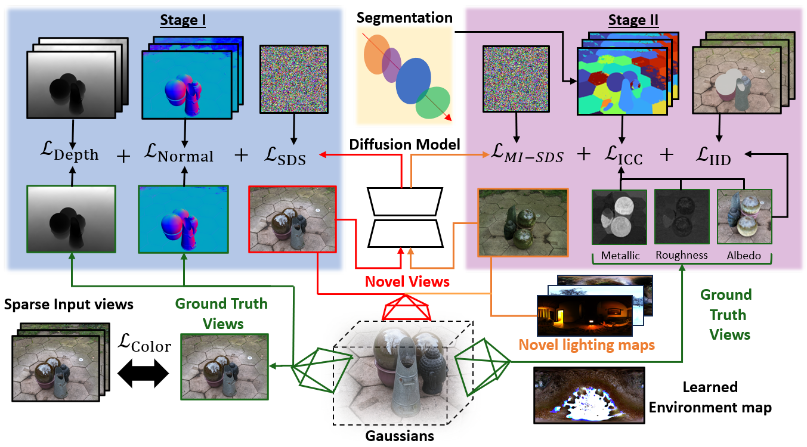
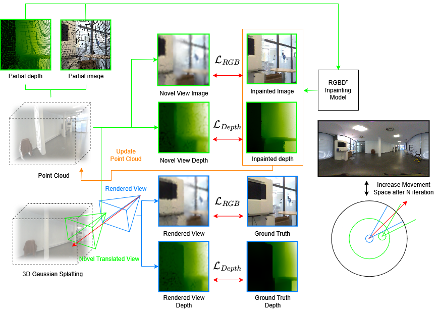
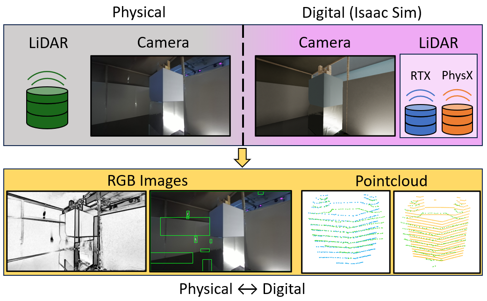

Featured Projects

GAINS: Gaussian-based Inverse Rendering from Sparse Multi-View CapturesPatrick Noras, Jun Myeong Choi, Didier Stricker, Pieter Peers, Roni Sengupta

Mono360° GSThis project introduces Mono 360° GS, a method for monocular panoramic image-based rendering that generates parallax through partial ground-truth views and uses inpainting to handle occlusions, achieving improved results on real-world scenes.

Performance and Accuracy Assessment of Nvidia's Omniverse Isaac Sim for Generating Synthetic Data from Real-world ScenariosI created this project as part of my undergraduate thesis to evaluate NVIDIA's Omniverse Isaac Sim for generating realistic synthetic stereo-camera images and LiDAR point clouds by comparing simulated sensor data to a real-world scene. |